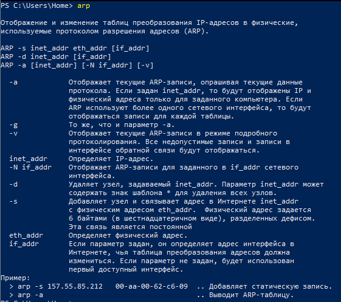

Звіт
про лабораторну роботу №2 з курсу
"Програмна інженерія розподілених інтернет-застосувань"
студента групи ІПЗ-21-2
Губарєва Ростислава Вадимовича
Завдання лабораторної роботи
Метою роботи є ознайомлення з функціональними можливостями мережевих
утиліт операційної системи Windows.
В результаті роботи студент навчиться визначати характеристики TCP/IP-
мережі, тестувати з'єднання комп'ютерів у мережі, використовувати утиліти мережі
при налагодженні додатків.
Результат виконання роботи
- Утиліта ipconfig
- Отримайте довідку параметрів утиліти ipconfig
- Отримайте короткий звіт утиліти, досліджуйте його
- Отримайте повний звіт утиліти. Випишіть символічне ім’я хоста, IP-адресу, маску підмережі, MAC-адресу адаптера
- Визначте, до якого класу адрес належить виписана IP-адреса; обчисліть максимальну кількість хостів, яка може бути в підмережі та вкажіть діапазон їх адрес; визначте код виробника мережного адаптера.
- Утиліта hostname
- Визначте ім’я NetBIOS - ім’я комп’ютера за допомогою утиліти hostname. Порівняйте його з ім’ям, отриманим за допомогою утиліти ipconfig.
- Утиліта ping
- Отримайте довідку про параметри утиліти ping
- За допомогою ping перевірте працездатність інтерфейсу внутрішньої петлі комп’ютера
- За допомогою утиліти ping перевірте доступність інтерфейсу якогось комп`ютера в локальній мережі, вказавши як параметри його IP-адресу
- За допомогою утиліти ping перевірте доступність інтерфейсу якогось комп’ютера в локальній мережі, вказавши як параметр символічне ім’я хоста
- За допомогою утиліти ping перевірте доступність інтерфейсу якогось комп’ютера в локальній мережі, вказавши як параметр символічне ім’я хоста і збільшивши розмір буфера відправки до 1000 байт
- За допомогою утиліти ping перевірте доступність інтерфейсу якогось комп`ютера в локальній мережі, вказавши в якості параметрів його IP-адресу і встановивши кількість запитів, що відправляються, 17
- Утиліта tracert
- Отримайте довідку про параметри утиліти tracert
- За допомогою утиліти tracert визначте маршрут хоста самого себе (інтерфейс внутрішньої петлі)
- За допомогою утиліти tracert визначте маршрут до хоста у локальній мережі. Визначте кількість стрибків у отриманому маршруті
- Утиліта route
- Отримайте довідку про параметри утиліти route
- На екрані монітора виведіть таблицю активних маршрутів комп`ютера. Дослідіть отриманий звіт. Визначте рядки таблиці, що відповідають інтерфейсу внутрішньої петлі та широкомовним адресам. Визначте IP-адреси шлюзів
- Утиліта arp
- Отримайте довідку параметрів утиліти arp 
- Виведіть на екран монітора arp-таблицю. Дослідіть отриманий звіт. Визначте хости, яким відповідають рядки arp -таблиці. Визначте IP-адресу, якої немає в arp-таблиці, але є в локальній мережі. Виконайте утиліту ping на адресу цього хоста. Виведіть знову arp-таблицю і поясніть зміни, що відбулися. Визначте MAC-адреси двох хостів із найближчими IP-адресами.
- Утиліта nslookup
- Запустіть утиліту nslookup у діалоговому режимі та наберіть команду help. Ознайомтеся з отриманим звітом, що відображає можливості nslookup
- Запустіть утиліту nslookup у діалоговому режимі. Визначте ім`я та IP-адресу хоста, на якій встановлено DNS-сервер за промовчанням. Визначте IP-адреси хостів за їхніми іменами (імена хостів видасть викладач)
- Утиліта netstat
- Отримайте довідку параметрів утиліти netstat
- Запустіть утиліту netstat -a для відображення всіх підключень та портів, що очікують. Дослідіть звіт. З`ясуйте, які відомі служби прослуховують порти. З яким із цих портів підтримується зовнішнє з`єднання і яким протоколу? Визначте імена хостів та номери портів зовнішніх з`єднань
- Запустіть утиліту netstat -b для відображення виконуваних файлів, які беруть участь у створенні підключень. Визначте виконувані файли служб, які прослуховують порти, ідентифікатори операційної системи
- Запустіть утиліту netstat - ab . Дослідіть отриманий звіт. Для формування файлу звіту утиліти перенаправте виведення утиліти файл за допомогою команди: netstat - ab > gt; c:\report.txt. Проконтролюйте наявність звіту у файлі
- Утиліта nbtstat
- Отримайте довідку про параметри утиліти nbtstat . Виконайте всі команди, відображені у довідці. Дослідіть отримані звіти
- Утиліта net
- Отримайте довідку про параметри утиліти net. Отримайте довідку щодо окремих команд утиліти за допомогою команди help. Отримайте статистику робочої станції та сервера комп`ютера за допомогою команди statistics. Перейдіть повідомлення на сусідній комп`ютер за допомогою команди send. Отримайте список користувачів комп`ютера за допомогою команди user
Повний звіт я отримав за допомогою команди ipconfig /all.
Ім’я хоста: BANDERA-PC
IP-адреса: 192.168.31.109
Маска підмережі: 255.255.255.0
MAC-адреса: 50-EB-F6-98-0F-FE
IP-адреса належить до класу C.
Максимальна кількість хостів, яка може бути в підмережі: 254.
Діапазон адрес для хостів буде від 92.168.31.1 до 192.168.31.254.
Код виробника мережевого адаптера: 50-EB-F6.